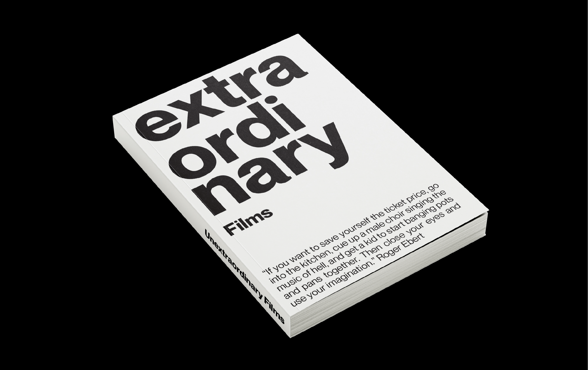

Wikibook 'Films that are considered the worst'
Taken context from Wikipedia’s ‘Films that are considered the worst’, ‘Unextraordinary Films’ is a visualization of the web page’s list of bad movies. My purpose was to simplify moving medium (image, sound, CGI) into only types. This will limit the visual impact and allow readers to imagine their own scenes.
